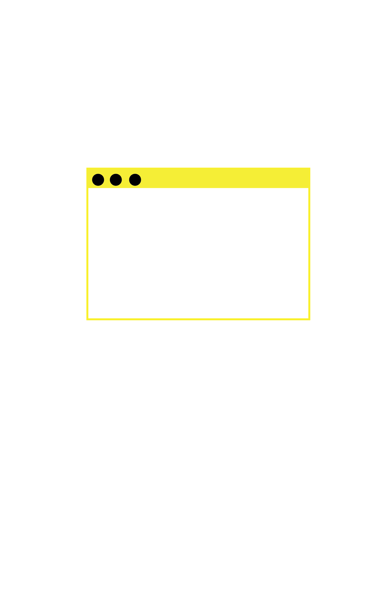
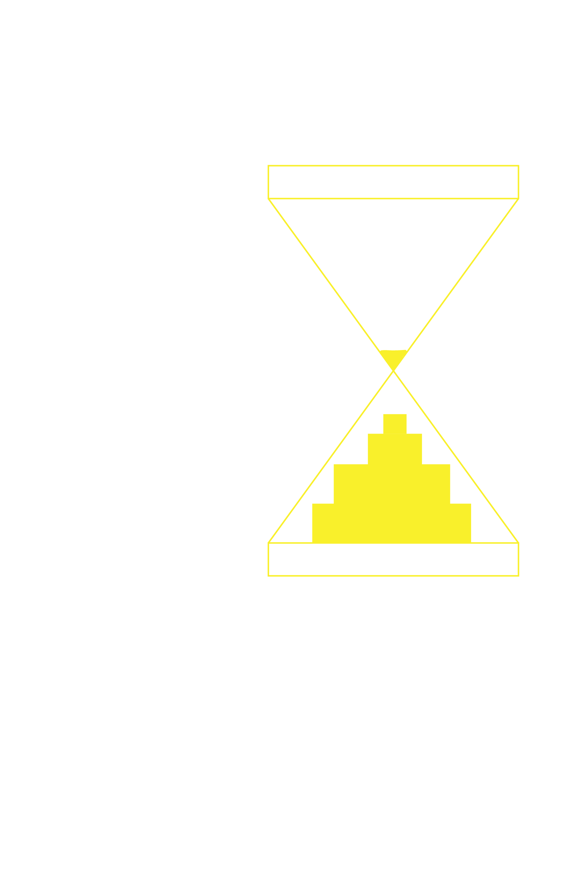
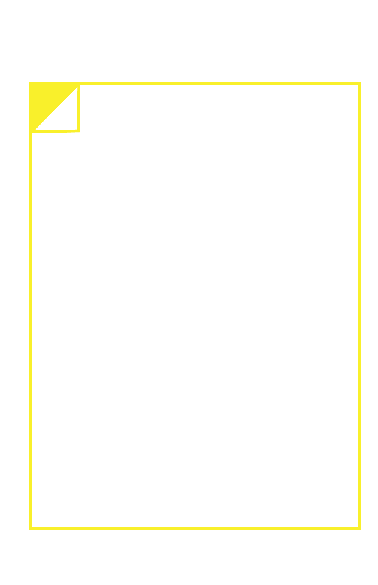

The Changing
Landscape in
Communication
With Jon Kapper a designer and
business owner that lived through it.
What was your first experience on the internet?
My history with the internet goes back so far that I was a user when it was referred to as the Worldwide Web and .com was widely known to stand for computer. I began to use the internet in the mid-90s but there was scant information readily available, connections were sporadic and slow, most pages were simple HTML script, and search engines were limited. It wasn't until the late 1990s and early 2000s that the internet became the resource for news, entertainment, and commerce that it is today. My early use of the internet was primarily for research and the development of websites for our customers.
Did college prepare you for how to use the internet as a communication tool or was it way out on the periphery at that time?

I went to college in the 1980s, so the internet was not even a part of the conversation. That was when design was done primarily done by hand and shared via printed materials. The core lessons I learned during college have always been the foundation for how to approach a communication challenge regardless if the solution was delivered in print or digitally. Clarity, cohesion, and consistency were the tenets of the instruction I received while earning my degree in Mass Media Communication, and I continue to apply those to my work today. Those lesson apply to the internet, specifically website development and social media, as much as they do to print, so in a way college did prepare me for the internet.
What do you remember from this transition of flip phone to iphone?
Well, I remember the flip phone was very bulky and you couldn't comfortably store it in your pocket, but I also recall that it was a "phone." With the advent of the "smart" phone, we now carry around micro computers that have expanded the capabilities of the flip phone tenfold. There are pros and cons to all technological advances, however, from a user standpoint, the smartphone has provided mobile accessibility to tools that I commonly use during the course of a work day. There are a few ethical issues I do have with the smartphone, however.For one, I think it is the primary driver of our growing convenience culture. Also, with the tracking software embedded in pretty much every App stored on my phone, I fear our sense of control over our personal information and anonymity is inperil.
You experienced first hand how social media affected the industry can you tell me what it was like?Did you lose business or have to adapt even with no formal education?

I love social media and curse its existence in equal measure. From the standpoint of communication it has opened up opportunities for engagement that were impossible only five years ago. So as a marketing professional, it's an incredibly powerful tool to have access to. As with all forms of communication, the value of the information you are sharing must begin at a place of mutual trust, which is where meaningful interaction begins. So as a company we are very careful to avoid sharing spurious claims or pandering to the lowest common denominator.
As new opportunities become available, we must adjust. The advent of social media was just another case where we as company were required to learn on the job and adapt our approach to communication accordingly. Through research and training, we have been able to stay ahead of the curve and successfully implemented dozens of social media campaigns and manage a number of customer social media channels.
Your business has been around for 25 years. Have you had to make adjustments to how you do business to stay relevant?
Yes, we have continually evolved to meet new challenges and take advantage of expanding opportunities. When we began in 1995, we were primarily a graphic design studio. However, it quickly became apparent that we could be a much more valuable partner with our clients by providing a strategic approach to their entire marketing effort. Much of what we have learned over the years has been by doing, but listening to our clients has provided key insights and allowed us to be responsive to their needs rather than creating in a vacuum. We have a quote from Paul Rand on our common area bulletin board that serves as a guidepost for all that we do. It reads: "Simplicity is not the goal. It is the by-product of a good idea and modest expectations." So, be creative, but be mindful of your clients needs.
